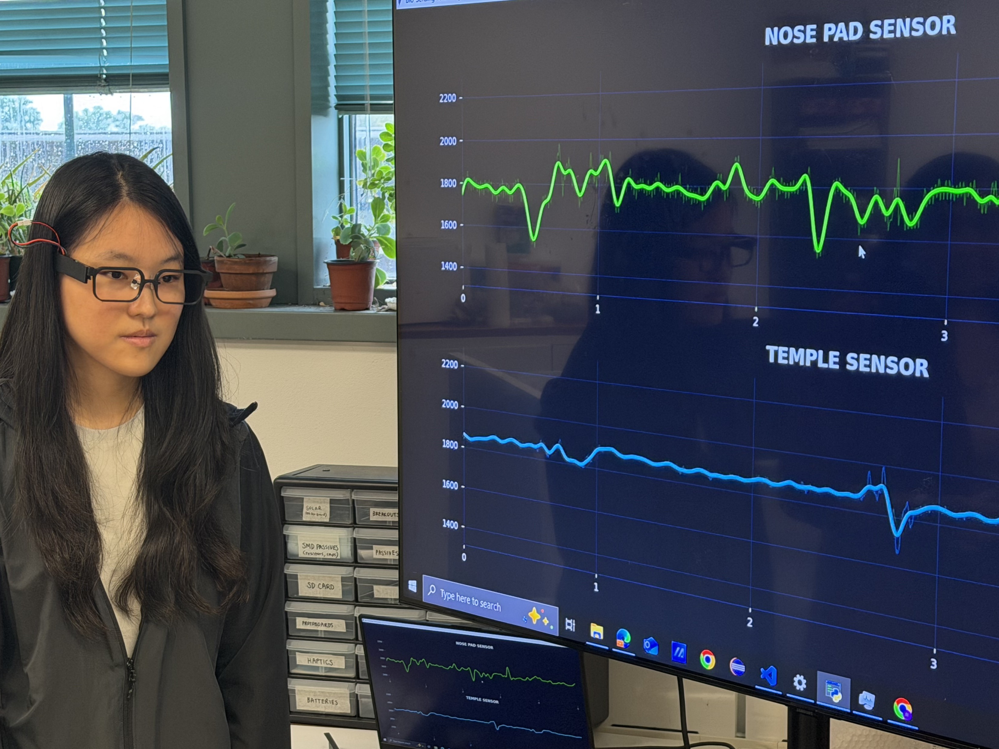

I build interactive systems that solve problems around us.
I’m Yung-ching (Isa), a Graduate Researcher in the VAK Embodied Systems Lab at Northwestern University. I work on ubiquitous computing and human-computer interaction: problems where software has to meet sensors, people, and messy real-world data.
My projects span the stack. I’ve built low-power sensing hardware and signal-processing pipelines for smart glasses, a Wi-Fi indoor positioning system with a live web interface, and a retrieval-augmented chatbot that helps people without lawyers navigate court. I like turning a research idea into something that runs, is measured, and that people can use.
Open to software engineering / ML engineering roles starting Jan 2027.
In the news

Blink-powered glasses could keep an eye on health
New smart glasses harvest mechanical energy from facial movements to power sensors
Projects
Experience
Graduate Researcher, VAK Embodied Systems Lab
- Co-first author of GlassTENG (Ubicomp/ISWC 2026 & UIST demo 2026): self-powered based sensing of pulse, jaw, and facial activity from everyday glasses.
Teaching Assistant, Mobile and Ubiquitous Computing
- 35 students: led [discussion sections / office hours], graded [assignments / projects], and wrote [problem sets / autograder tests].
- [Add: a result, e.g. course rating, redesigned assignment, students mentored on projects.]
Research Intern, Bioinformatics Lab
- Adapted a Faster R-CNN model to locate eccDNA within DNA sequences and benchmarked it on eccDNA, G4-DNA, R-loop, and triplex-DNA data. Traced a flat training loss to a poor architecture fit and moved on to a better-suited question.
- Converted variable-length sequences into 16×16 FCGR matrices to train a CNN copy-number-variation classifier (0.8 accuracy), then tested whether eccDNA behaves like CNV (0.52 accuracy, so no strong link).
- Worked independently for most of the project: planned experiments, taught myself new methods, and reported negative results.
Teaching Assistant, Computer System Laboratory Course
- 60 students: [what you taught, graded, or built for the course].
Education
Northwestern University

National Taiwan University
Contact me
Email isalay1003@gmail.com